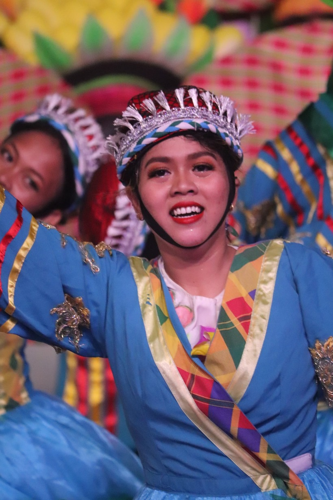
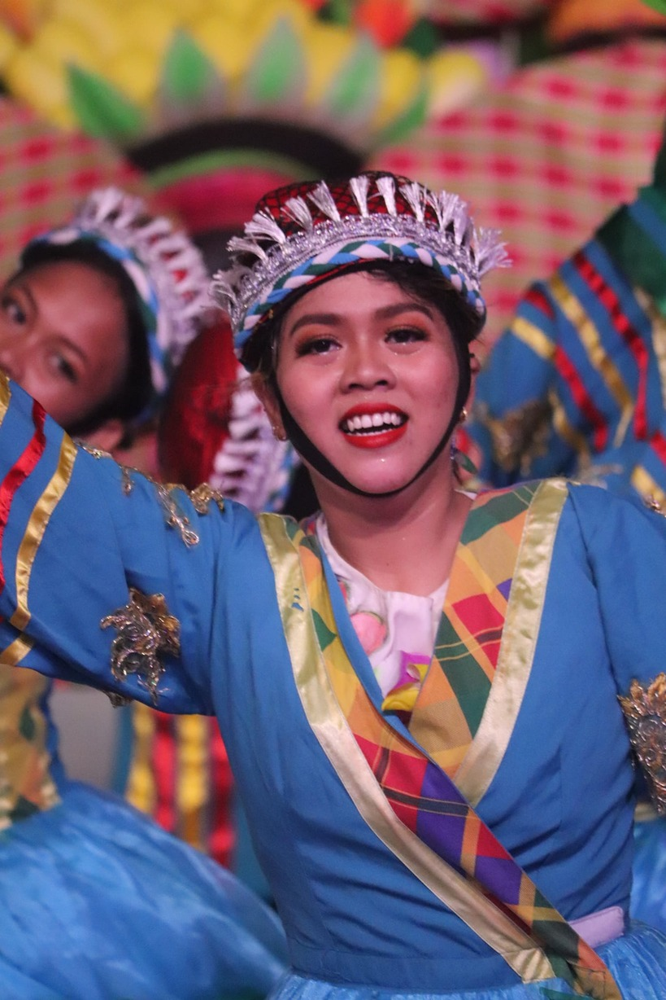

Guimaras: Home of the Manggahan Festival
The world-renowned Guimaras mangoes truly put the island on the map. Famed for their exceptional taste and sweetness, these mangoes are considered among the best in the world. Guimaras' fertile soil and favorable climate provide the perfect conditions for cultivating these succulent fruits. Visitors can explore mango plantations, taste freshly harvested mangoes, and even purchase mango-based products as souvenirs.
Beyond its natural beauty, Guimaras Island is steeped in a rich cultural heritage. The locals, known for their warm hospitality, proudly celebrate their traditions and customs. The Manggahan Festival, held annually, pays homage to the bountiful mango harvest with vibrant parades, cultural performances, and a showcase of local delicacies. Visitors are immersed in a colorful spectacle of music, dance, and culinary delights, providing a glimpse into the island's vibrant cultural tapestry.
During the Manggahan Festival, the streets burst with color, music, and dance. Experience the exuberance of the parades, as participants adorned in elaborate costumes fill the air with infectious energy. Delight in the vibrant cultural performances that showcase the island's traditions and artistic talents. Indulge in the mouthwatering mango-inspired delicacies and treats that line the streets, tantalizing your taste buds with their unique flavors.